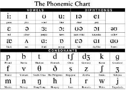
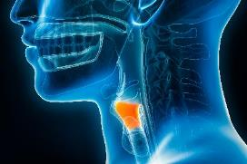
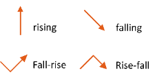

Activity 2: Pronunciation differences
Audio: Identify pronunciation features
Listen again to Identify pronunciation features. Listen closely to the intonation in both conversation 1 and conversation 2.
Complete the question then discuss your answers with your speaking partner.
What pronunciation differences can you hear?
Model answer:
Pronunciation glossary
The pronunciation glossary is a list of pronunciation terms. This will help you throughout the workbook.
| Term | Description | Example |
|---|---|---|
| Phoneme | A spoken sound that makes up a spoken word | The word books / bƱks/ has 5 letters but 4 phonemes. |
| Phonemic chart | A chart of symbols for all the sounds of English – The phonemic symbols are used in dictionaries to help you pronounce words. |  |
| Vowels | Vowels are sounds made with the mouth partly open. The air is not stopped by the teeth, lips or tongue. | i:, I, ʊ, u:, ɛ, ə, ɜ:, ɔː, æ, ʌ, ɑː, ɒ |
| Diphthongs | These are 2 sounds made by the mouth moving from one vowel to another vowel. | ɪə, eɪ, ʊə, ɔɪ, oʊ, ɛə, ɑɪ, ɑʊ |
| Schwa | This is an unstressed vowel which is spoken shorter. | /Ə/ |
| Syllable | A part of a word – It usually has a vowel in English, and can have more than one consonant and one vowel. You count the number of syllables by breaking the word up into parts. |
syl-la-ble (3 syllables) pro-nun-ci-a-tion (5 syllables) |
| Consonants | These are sounds made by partly blocking air with tongue, teeth or lips. | p, b, t, d, tʃ, dʒ, k, g, f, v, θ, ð, s, z, ʃ, ʒ, m, n, ŋ, h, l, r, w, j |
| Voice box | The organ in your neck used for breathing, speaking and making sounds. |  |
| Voiced sounds | Spoken sounds made by vibrating your voice box | /b/ – Put your hand on your throat and say this sound; you will feel the vibration. /d/ |
| Unvoiced sounds | Spoken sounds made without using your voice box | /p/ – Put your hand on your throat and say this sound; you won’t feel the vibration. /t/ |
| Minimal pairs | Words that have only one phoneme or sound different | ship and sheep thing and think hut and hat make and bake |
| Word stress | A syllable in a word that is spoken with more energy – It is spoken longer and higher than the other syllables. | SUpermarket |
| Sentence stress | Parts of a sentence spoken slower and louder. Stressed words show us what is important or new information in a sentence. | AusTRALia has a MAjor problem with FOOD waste. |
| Weak forms | Unstressed forms of words | I can (/kæn/) cook versus I can (/kƏn/) cook |
| Primary stress | The main stress in a word or a clause | My FAVourite food is MANgo. |
| Contrastive stress | Stress on a word you would not usually stress in a sentence | MY favourite food is mango. (Not yours) My favourite food IS mango. (Don’t you believe me?) |
| Connected speech | When words are joined to make speech smooth through linking (see below) or change of sound, some sounds are left out. | How’re you going? /haʊwəjə/ Do you want to grab a coffee? /ʤə wɒnə græbə/ |
| Linking | Linking happens when you join the end of one word with the beginning of another. It can be either consonant-vowel or consonant-consonant. | |
| Contractions | Two words joined together in more informal speaking | do + not = don’t I + am = I’m |
| Rhythm | The pattern of stressed and unstressed syllables in speech – there is a more regular beat on the main stress in contrast to shorter weak syllables or words. | It's great to see you! |
| Intonation | Intonation is the music of a sentence or group of words. This is the way a speaker changes the level of their voice to show meaning. |  |
Answers
Listen again to Identify pronunciation features. Listen closely to the intonation in both conversation 1 and conversation 2.
What pronunciation differences can you hear?
Model answer:
Conversation 1: Speaker A’s voice is high and goes up on the important words. This shows she likes the weather. Speaker B shows surprise on the word ‘really’. His voice goes down then up.
Conversation 2: Speaker A and Speaker B’s voices are lower and flatter. This shows they do not like the weather.
Show transcript – Identify pronunciation features
Identify pronunciation features. Two friends are talking about the weather
Conversation 1
Good to see the weather is fine again!
Really? I thought it was going to rain!
Oh, it's a beautiful day! I can't wait go for a walk!
Conversation 2
Good to see the weather is fine again!
Yeah! Sure. You're joking?
Oh, it's a beautiful day! I can't wait to go for a walk!